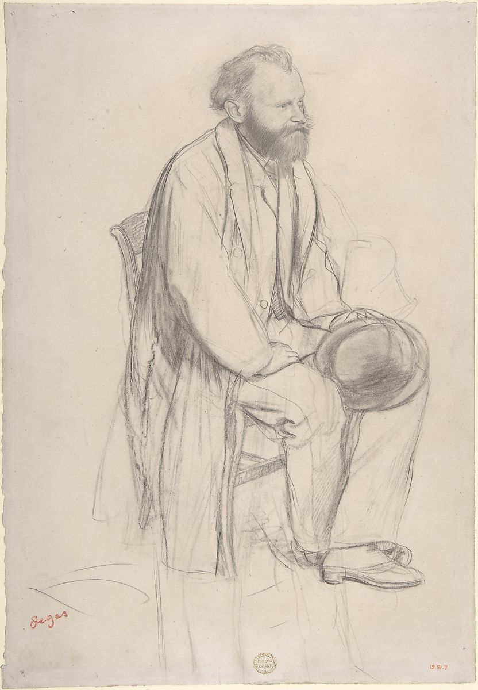

<head>
<meta charset="UTF-8" />
<meta name="keywords" content="drawing, painting" />
<meta name="description" content="drawings by Sunjy" />
<title>Sunjy</title>
<link rel="shortcut icon" type="image/x-icon" href="../../mImages/mCommon/favicon.ico" media="screen" />
<link rel="stylesheet" type="text/css" href="../../mCsses/mCommon/mCssA.css" />
<link rel="stylesheet" type="text/css" href="../../mCsses/mCommon/mCssB.css" />
<link rel="stylesheet" type="text/css" href="../../mCsses/mCommon/mCssC.css" />
<link rel="stylesheet" type="text/css" href="../../mCsses/mCommon/mCssD.css" />
<link rel="stylesheet" type="text/css" href="../../mCsses/mContent/mCssA.css" />
<link rel="stylesheet" type="text/css" href="../../mCsses/mContent/mCssB.css" />
<link rel="stylesheet" type="text/css" href="../../mCsses/mContent/mCssC.css" />
<link rel="stylesheet" type="text/css" href="../../mCsses/mContent/mCssD.css" />
</head>
<script type="text/javascript" src="../../mScripts/mContent/mContentAA.js" /></script>
<script type="text/javascript" src="../../mScripts/mContent/mContentAB.js" /></script>
<script type="text/javascript" src="../../mScripts/mContent/mContentAC.js" /></script>
<script type="text/javascript" src="../../mScripts/mContent/mContentAD.js" /></script>
<script type="text/javascript"></script> 
<script type="text/javascript">
document.write('<div class="mImgAbsolute"></div>');
/*
document.write('<p class="mFontSizeBColor" />From a white paper...</p>');
document.write('<table class="center"><tr><td>');
document.write('');
document.write('</td></tr></table>');
*/
</script>


<script type="text/javascript">
document.write('<p class="mFontSizeBColor" />Edouard Manet, Seated, Holding His Hat</p>');
document.write('<p class="mFontSizeSColor" />By Edgar Degas, ca. 1865. This drawing and another by Degas, both purchased at the sale of the contents of Degas&#39;s studio in 1918, are preparatory studies for an etched portrait of Manet made about 1866–68, a few years after the two painters first met in the Louvre.<br><br>Degas portrayed Manet several times: He made a drawing of Manet watching the races at Longchamps and a painting that showed him listening to Mme Manet playing the piano. Upon receiving the painting, Manet was dissatisfied with his wife&#39;s likeness and cut off her side of the canvas, an act which enraged Degas and soured the artists&#39; friendship.</p>');
document.write('<table class="center" /><tr><td>');
document.write('<br>Degas portrayed Manet several times: He made a drawing of Manet watching the races at Longchamps and a painting that showed him listening to Mme Manet playing the piano. Upon receiving the painting, Manet was dissatisfied with his wife&#39;s likeness and cut off her side of the canvas, an act which enraged Degas and soured the artists&#39; friendship." />');
document.write('</td></tr></table>');
</script>


